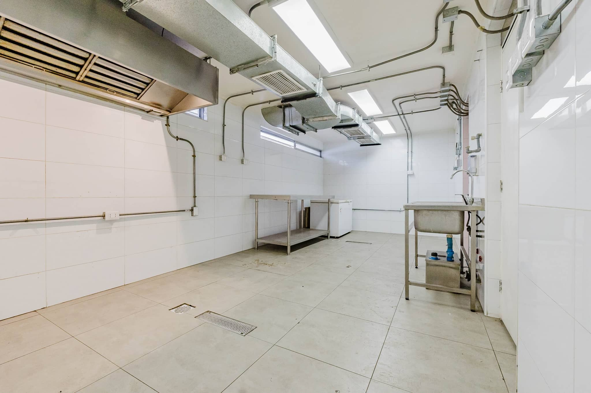

El auge del Delivery en Santiago Oriente
Vitacura se ha consolidado como una de las comunas con mayor demanda de servicios de delivery gastronómico premium en Santiago. El alto poder adquisitivo de sus residentes, sumado a un ritmo de vida que privilegia la comodidad, hacen de esta área una ubicación inmejorable para modelos de negocio basados en entregas a domicilio.
Instalarse en el sector oriente ya no requiere la inversión millonaria de un restaurante tradicional. Las cocinas para delivery en Vitacura ofrecen la solución perfecta para marcas que buscan penetrar este mercado con costos controlados y una infraestructura de nivel profesional.
¿Qué es una Dark Kitchen?
Eficiencia y escalabilidad para la gastronomía moderna.
Una dark kitchen (también conocida como ghost kitchen o cocina fantasma) es un modelo de negocio gastronómico enfocado exclusivamente en la preparación de alimentos para venta por delivery. Al eliminar el espacio para la atención a público (mesas, garzones, salón), se reduce drásticamente tanto la inversión inicial como los costos operativos mensuales.
Estos espacios están optimizados para integrarse con aplicaciones de reparto (UberEats, PedidosYa, Rappi) o canales de venta directos, permitiendo que las marcas se concentren en lo que realmente importa: cocinar con excelencia y enviar los pedidos de manera rápida y eficiente.
Sin atención a público
Ahorro en diseño de salón y personal de servicio al cliente.
100% Digital
Ventas a través de apps y canales propios optimizados.
Múltiples marcas
Opera diferentes conceptos gastronómicos en el mismo espacio.
Cocinas disponibles en Vitacura
Nuestros módulos en arriendo, diseñados para operaciones ininterrumpidas.
Ver cocinas en Ñuñoa
Kitchen Hub Vitacura
Módulos disponibles para operación gastronómica inmediata en sector estratégico de Vitacura.
- • Extracción independiente y campanas
- • Energía monofásica y trifásica
- • Instalación sanitaria profesional
¿Por qué arrendar una dark kitchen en Vitacura?
Posiciona tu marca en una de las zonas comerciales y residenciales más exclusivas.
Ticket Promedio Alto
Accede a un público dispuesto a pagar por calidad y experiencias gastronómicas premium.
Cobertura Estratégica
Cubre eficientemente despachos hacia Las Condes, Lo Barnechea y Providencia.
Rapidez Operativa
Cocinas completamente equipadas listas para que comiences a operar en tiempo récord.
Normativa Cumplida
Instalaciones con estándar sanitario profesional, facilitando tus permisos comerciales.
Cómo funciona Kitchen Hub
Tu nueva cocina en 3 simples pasos.
Explorar cocinas
Revisa la disponibilidad en nuestras instalaciones de Vitacura y encuentra el módulo que mejor se adapte a tus metros y necesidades.
Agendar visita
Contacta a nuestro equipo para visitar presencialmente el hub, revisar los empalmes, equipamiento y áreas comunes.
Comenzar a operar
Firma tu contrato e ingresa a operar. Nosotros nos encargamos del mantenimiento técnico para que tú solo te preocupes de cocinar.